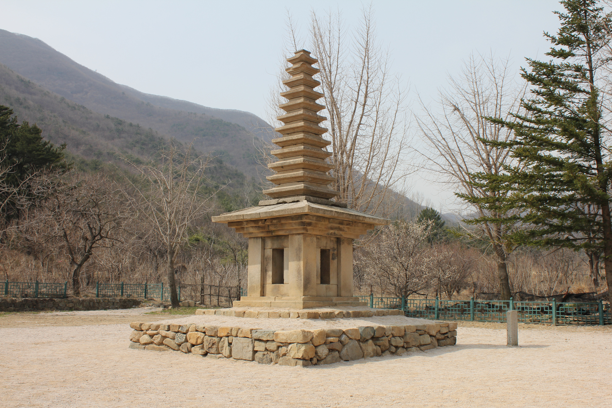
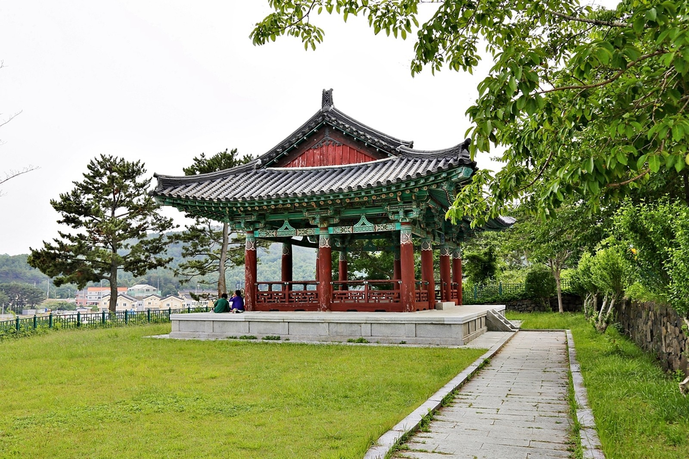
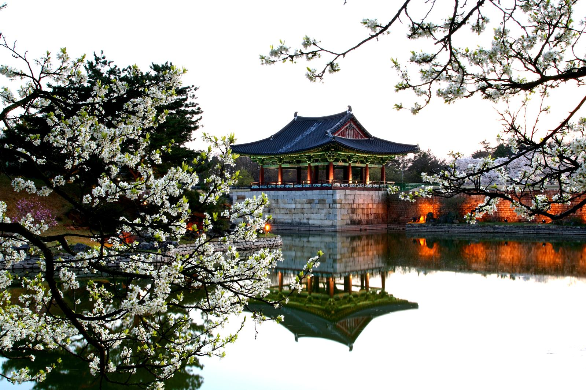
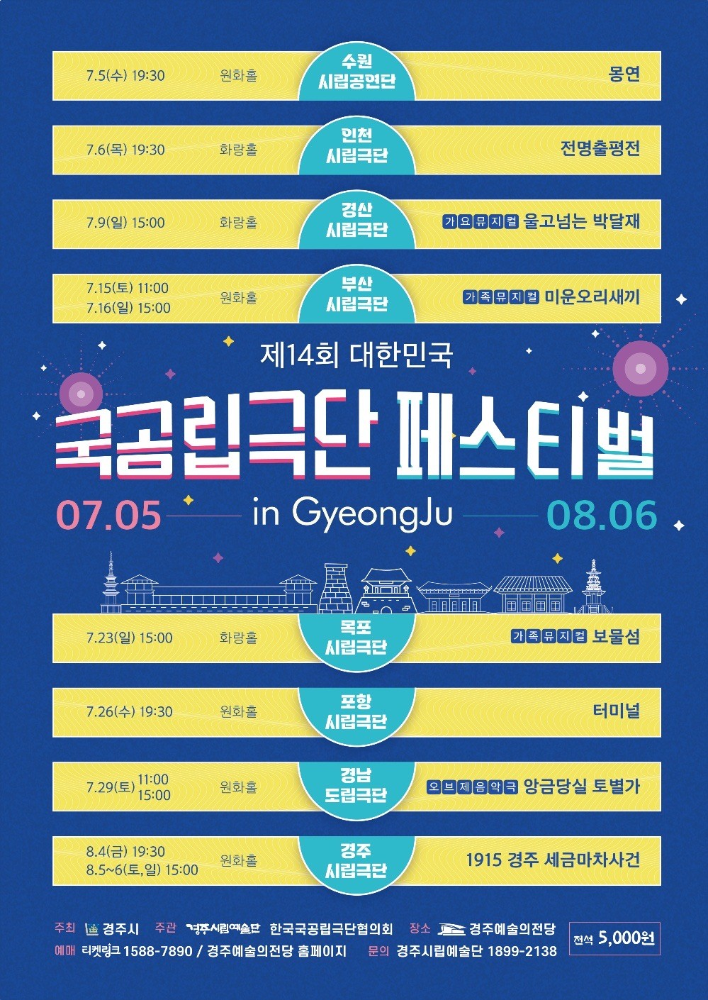

경주시청
미디어자료관
.
(
)
미세먼지 좋음
전체누리집 바로가기
경주문화관광
경주여행
권역별 관광지
여행코스추천
경주의 자연
체험과 레저
투어프로그램
문화행사
이달의 축제 및 행사
정기축제 행사안내
공연전시 정보
문화재/역사
세계문화유산
경주의 역사
분류별 국가유산
음식/숙박/쇼핑
음식
숙박
쇼핑
여행도우미
교통정보
문화관광 해설사
관광안내지도
공중화장실
경주관광코스
로그인
여행
도우미
경주여행에 도움이 되는 바로가기
정보를 안내합니다
교통정보
문화관광해설
관광안내지도
교통정보
경주관광코스
문화재 소개
신라 천년의 고도, 경주의 문화재를 소개합니다
CULTURAL
PROPERTIES



축제ㆍ행사
